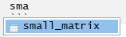
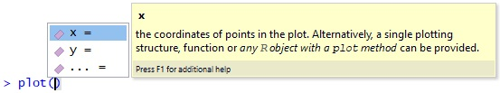

3 Using RStudio
The previous section taught the basics of the R language. We entered and ran commands directly in the console. In this section we will learn how to write R scripts in RStudio’s source editor. We will also take a step back and considers how R code fits into the wider context of scripts, projects, and getting help in RStudio. RStudio is an integrated development environment (IDE) for R that makes it easy to create and run scripts, explore R objects and functions, plot results and get help.
The first exercise is to open RStudio, take a look around, identify and explore the main components, shown in Figure 3.1.
Click on different buttons in RStudio’s GUI and try changing the Global Settings (in the Tools menu) and see RStudio’s shortcuts by pressing Alt-Shift-K (or Option+Shift+K on Mac).
Figure 3.1: The RStudio user interface showing the four main ‘panes’.
3.1 Projects and scripts
Projects organise files and settings in RStudio into folders.
Each project has its own folder and Rproj file.
When using RStudio, always ensure you are working in a named project to organise your work.
Start a new project with by clicking on File > New Project in RStudio’s top menu.8
You create projects either in a new or existing directory (folder).
Make a new project called ‘lrrsrr’ (short for ‘learning reproducible road safety research with R’) or a name of your choice and save it in a sensible place on your computer.
The name of the project will appear in the top right of RStudio.
‘Scripts’ are files where R code are stored, and these can be edited in the Source Editor panel (the top left panel in Figure 3.1).
Keeping your code in sensibly named, well organised and reproducible scripts will make your life easier.
We could continue typing all our code into the console, as we did in Section 2.
However, that approach is limited when working on anything more complicated than a few simple commands.
Code that you want to keep and share should be saved script files, i.e. plain text files that have the .R extension.
Make a new script by typing and running this command in the R console:9
This will open the Source Editor and place your cursor there.
Try jumping between the Source Editor and the Console by pressing Ctl+1 and Ctl+2.
Keeping scripts and other files associated with a project in a single folder per project (in an RStudio project) will help you to locate things you need and develop an efficient workflow. Next, to check that your project is saved, close RStudio.
3.2 Writing and running code
Re-open RStudio and ensure that you have an empty file open in the Source Editor.
We will type some basic commands into this file.
Type the following lines of code into your new section3.R R script and execute the result line-by-line by pressing Ctrl+Enter (Command+Enter on Mac):
When the code has been sent to the console, two objects are created, both of which are vectors of 5 elements (Bonus: check their length using the length() function).
The third line of the code chunk plots them.
Save the script by pressing Ctrl+S.
There are several ways to run code within a script and it is worth becoming familiar with each. Try running the code you saved in the previous section using each of these methods:
- Place the cursor in different places on each line of code and press
Ctrl+Enterto run that line of code. - Highlight a block of code or part of a line of code and press
Ctrl+Enterto run the highlighted code. - Press
Ctrl+Shift+Enterto run all the code in a script. - Select
Runon the toolbar to run all the code in a script. - Bonus: Use the function
source()to run all the code in a script e.g.source("section3.R")
Practice alternating between the console and the source editor by pressing Ctl+1 and Ctl+2.
3.3 Viewing Objects
To practice typing code into scripts, rather than into the console, we will re-create the objects we created in Section 2.
Create a new script called objects.R and type the following commands, character-for-character, including spaces in the right places. Typing rather than copy-pasting will help develop good coding style and speed:10
vehicle_type = c("car", "bus", "tank")
casualty_type = c("pedestrian", "cyclist", "cat")
casualty_age = seq(from = 20, to = 60, by = 20)
set.seed(1)
dark = sample(x = c(TRUE, FALSE), size = 3, replace = TRUE)
small_matrix = matrix(1:24, nrow = 12)
crashes = data.frame(vehicle_type, casualty_type, casualty_age, dark)Run the code line-by-line by pressing Ctl+Enter multiple times, as described in the previous section.
Try viewing the objects in the following ways:
- Type the name of the object into the console, e.g.
crashesandsmall_matrix, and run that code. Scroll up to see the numbers that didn’t fit on the screen. - Use the
head()function to view just the first 6 rows e.g.head(small_matrix) - Bonus: use the
nargument in the previous function call to show only the first 2 rows ofsmall_matrix - Click on the
crashesobject in the environment tab to View it in a spreadsheet. - Run the command
View(vehicle_type). What just happened?
We can also get an overview of an object using a range of functions, including:
summary()class()typeof()dim()length()
View a summary of the casualty_age variable by running the following line of code (you should see the same output as shown below):
## Min. 1st Qu. Median Mean 3rd Qu. Max.
## 20 30 40 40 50 60Exercise: use the functions listed above (class() to length()) to test the basic R functions and extract key information about the object vehicle_type.
What does the output tell us about the object?
3.4 Autocompletion
RStudio can help you write code by autocompleting it. RStudio will look for similar objects and functions after typing the first three letters of a name.

When there is more than one option, you can select from the list using the mouse or arrow keys.
Within a function, you can get a list of arguments by pressing Tab.

Test RStudio’s amazing autocompletion capabilities by typing the beginning of object names and functions and pressing Tab to see what suggestions pop-up.
Try pressing Up and Down after pressing Tab to select different options.
Bonus: try autocompleting file names by typing "" (the closing quote mark should be added automatically) and pressing Tab when your cursor is between the quote marks. What happens when you type "~/" and press Tab with your cursor just after the tilde (~) symbol. What does this mean? (Hint: it involves the word ‘home’ and you can search the web to find a full answer)
3.5 Getting help
Every function in R has a help page.
You can view the help using ?. For example, ?sum and ?plot.
Many packages also contain ‘vignettes’, which are long form help documents containing examples and guides.
vignette() will show a list of all the vignettes available, or you can also view a specific vignette. For example, vignette(topic = "sf1", package = "sf").
Try getting help on the stats19 package by typing the following and pressing Tab when your cursor is just to the left of the closing bracket ). Autocompletion works for more than just R objects and files - try making RStudio autocomplete and run the command vignette("stats19-vehicles"). For example:
You can further search and explore R’s help files using the Help panel in the bottom right window in RStudio.
3.6 Commenting Code
It is good practice to use comments in your code to explain what it does. You can comment code using #
For example:
# Create vector objects (a whole line comment)
x = 1:5 # a seqence of consecutive integers (inline comment)
y = c(0, 1, 3, 9, 18.1) You can comment/uncomment a whole block of text by selecting it and using Ctrl+Shift+C.
Pro tip: You can add a comment section using Ctrl+Shift+R.
3.7 The global environment
The ‘Environment’ tab shows all the objects in your environment. This includes datasets, parameters, and any functions you have created. By default, new objects appear in the Global Environment, but you can see other environments with the dropdown menu. For example, each package has its own environment.
Sometimes you wish to remove things from your environment, perhaps because you no longer need them or because things are getting cluttered.
You can remove an object with the rm() function e.g. rm(x) or rm(x, y). Alternatively, you can clear your whole environment with the ‘broom’ button on the ‘Environment’ Tab.
- Remove the object
xthat was created in a previous section. - What happens when you try to print the
xby entering it into the console? - Try running the following commands in order:
save.image(); rm(list = ls()); load(".RData"). What happened? - How big (how many bytes) is the
.RDatafile in your project’s folder? - Tidy up by removing the
.Rdatafile withfile.remove(".Rdata").
3.8 Debugging Code
All the code shown so far is reproducible and, unless you introduced typos, is ‘bug free’, meaning that it runs without errors. Typos are common though and even experienced R users frequently see error messages as they undertake interactive data analysis. For that reason, learning to fix typos in R code is an important skill. RStudio comes to the rescue here with helpful debugging features. To test them, write some code that fails, as shown in the code chunk and exercises below 3.2, then answer the questions below by interacting with RStudio:
## Error: <text>:2:18: unexpected numeric constant
## 1: x = 1:5
## 2: y = c(0, 1, 3, 9 18.1
## ^Figure 3.2: Debugging code with RStudio: notice the wavy red line highlighting a typo.
- Try running the faulty code. How can the error message help debug the code?
- What is the problem with the code shown in the figure?
- Create other types of error in the code you have run (e.g. no symetrical brackets and other typos).
- Does RStudio pick up on the errors? And what happens when you try to run buggy code?
Always address debugging prompts to ensure your code is reproducible
3.9 Productivity boosting features
Finally, we look at functionality in RStudio that goes beyond the features described above. RStudio is an advanced and powerful IDE and is highly customisable in myriad ways, especially since the launch of the RStudio Addins add-on system in 2016. Rather than try to be comprehensive (an impossible task), this section provides a list of additional RStudio features, starting simple, that have been tried and tested, with links to the relevant documentation rather than extended descriptions.
Zoom levels and appearance settings: it is important for code and other text to be the right size. Too small and it’s hard to see, too big and you end up frequently scrolling up and down. The appropriate text size varies: if you’re doing a screen share, big text is appropriate; if you’re writing copious amounts of text (as I was when writing this prose in RStudio), smaller text will be handy. On Windows and Linux you can zoom with the shortcuts
Ctl+Shift++andCtl+-for zooming in and out respectively. See ‘Tools > Global Options’ menu (which can be launched with the shortcutAlt+Tand thenG) for more advanced ‘Appearance’ settings.Global search (and replace): in addition to search and replace functionality for single files (accessed in the standard way, by pressing
Ctl+F), RStudio has a powerful global search feature inbuilt. Launch this feature by pressingCtl+Shift+Fand you can search any file types (e.g. only files ending in.R) for any string within an entire project. This feature is very handy when working with large, multi-file projects.Shortcuts: there are many, many shortcuts built into RStudio. In fact, there is even a shortcut to show the list of shortcuts. Try pressing
Alt+Shift+Kto get the complete list. Nobody I know can remember, let alone use, all of these. However, over time I expect that you will learn to love some of them. My top 5 RStudio-specific shortcuts are:11Ctl+Enterto send a line of code from the code editor (called the Source Editor in RStudio) to be executed or ‘run’ in the console. Amazingly, some other prominent IDEs such as Microsoft’s VSCode editor, lack this important feature by default.Ctl+1andCtl+2to switch between the console (for writing test code and ‘run once’ commands) and the code editor (for writing code to keep).Alt+Up/DownandAlt+Shift+Up/Downto move and copy lines of code up and down, handy when you want to re-order your code or make small changes to a copy of a line of code.Ctl+Shift+Mwill create the pipe operator (%>%, this pipe was created using the shortcut!), saving time when creatingdplyrpipelines, as discussed in Section 5.Ctl+Shift+F10when you want to restart R, leaving you with a ‘blank slate’ in which packages are not loaded and objects are removed from the global environment.
Git integration for collaboration: RStudio provides two mechanisms for sharing your code with others via sites such as GitHub and GitLab, with the ‘Git’ panel in the top right pane and via the Terminal panel described in the next section.
Support for Python, C++ and other languages: a joke on Twitter said “What’s the best Python editor? RStudio.” Although most Python programmers would probably disagree, the joke is true in the sense that R has good support for some other languages: Python and C++ in particular. If you open a Python script in RStudio on a computer that has Python and the
reticulateR package installed, the R console will magically convert into a Python console when you pressCtl+Enterto execute a line of Python code, as described in the article “Reticulated Python” on the RStudio website.
Like R package, an active community of developers is developing a range of extensions and RStudio itself is gradually evolving to meet the evolving needs of 21st Century data scientists. If there are any features that you would like to see, you can always ask others for pointers, e.g. on the RStudio Community forum.
You can also create new projects from the R command line, for example with the command
rstudioapi::openProject("lrrsrr").↩︎You can also create new files by clicking on File > New File > R Script with the mouse, or with the keyboard shortcut by pressing
Ctrl+Shift+N. You can save the script and give it a sensible name likechapter3.Rwith File > Save orCtrl+S. We recommend using the commandfile.edit()to create files, however, because it is faster and develops your typing skills.↩︎Note: The
set.seed()function is used to set the starting number in the random number generator used in R. Setting the seed to a fixed value in your code will ensure reproducability if you are using random number generation or sampling.↩︎See online articles such as “23 RStudio Tips, Tricks and Shortcuts” for more comprehensive lists of useful RStudio shortcuts.↩︎